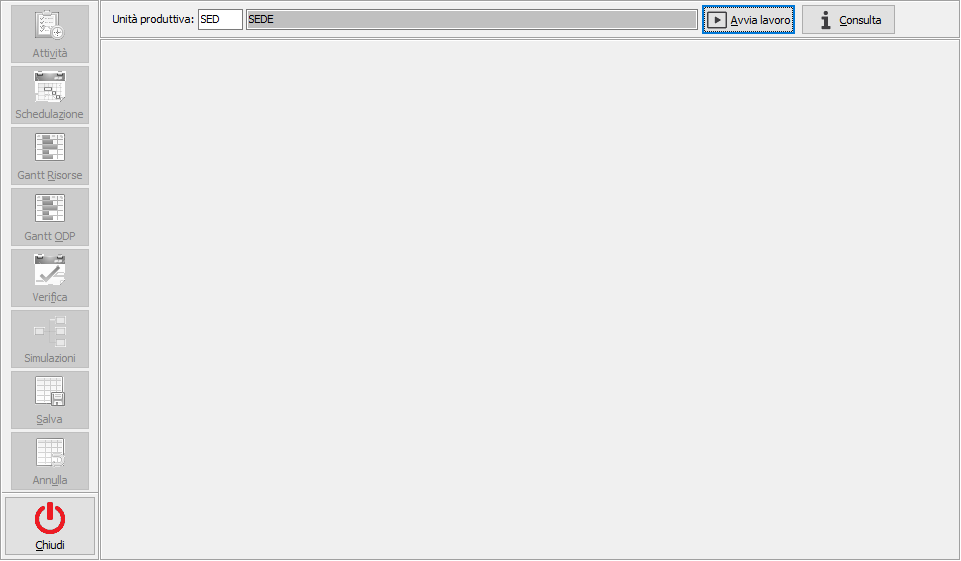
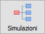
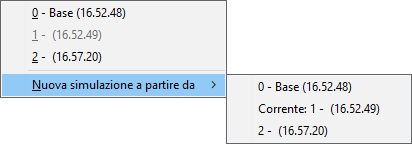
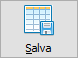
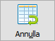

Schedulazione attività
Il nucleo operativo della fase di schedulazione è rappresentato dalla procedura di Schedulazione attività al cui interno sono gestite le diverse fasi che partendo dagli ODL portano alla generazione delle attività, che corrispondono in partenza agli ODL generati dal MPS; all'allocazione sulle risorse in ordine di fase e disposte su due orizzonti temporali: l’orizzonte di schedulazione e l’orizzonte successivo consultabili tramite Gantt specifici per ODP e risorse.
All'accesso viene presentata la finestra principale vuota e con i pulsanti di funzionalità spenti e con proposta l'unità produttiva di default valida per l'utente connesso ad OS1; è possibile solo scegliere l'unità produttiva, se gestite in configurazione le unità produttive multiple, premere il pulsante Avvia lavoro, il pulsante Consulta o chiudere e tornare a menù.

Al momento in cui viene premuto il pulsante Avvia lavoro si attivano le varie funzionalità comprese nella procedura e si può cominciare ad operare sull'unità produttiva selezionata e riportata nella barra del titolo; premendo sui pulsanti a sinistra si passa da una funzionalità all'altra e nella parte destra della finestra compariranno le finestra relative alla funzionalità scelta; è possibile passare da una funzionalità all'altra senza perdere le operazioni in corso a meno che non venga eseguita un'operazione che abbia influenza su tutte le funzioni previste, ad esempio la schedulazione; all'avvio della procedura saranno attivi solo i pulsanti Attività e Schedulazione; dopo aver effettuato la prima schedulazione saranno attivi anche tutti gli altri pulsanti.
Il pulsante Consulta consente l'accesso a tutte le funzionalità di analisi ed alle funzioni di gestione in modalità di sola visualizzazione; le altre funzionalità sono disabilitate.


Il pulsante Simulazioni, attivo dopo ogni schedulazione, consente in qualsiasi momento di creare delle "istantanee" del piano a partire dalla simulazione in uso o da altre salvate in precedenza, oppure di passare da una simulazione all'altra. In fase di elaborazione della schedulazione viene generata una simulazione denominata "Base" ed una copia di questa su cui si inizia a lavorare. Premendo il pulsante compare un menù con le simulazioni presenti tra cui quella più chiara è quella attiva; è presente anche la voce "Nuova simulazione a partire da" che se evidenziata mostra le simulazioni presenti da cui creare quella nuova; la simulazione attiva è indicata dalla dicitura "Corrente". è possibile cambiare simulazione sia dalle pagine dei gantt che dalla pagina della verifica ed i valori saranno immediatamente aggiornati.Il bottone Salva effettua il salvataggio piano in base alla simulazione attiva al momento del salvataggio.

Il pulsante Salva, attivo dopo ogni schedulazione a patto che non siano state inserite attività simulate, consente il salvataggio effettivo della schedulazione corrente; i dati finora mantenuti in memoria vengono aggiornati sulle tabelle delle attività, degli ODL e degli ODP; in questa fase vengono anche calcolati gli impegni per i materiali ed i semilavorati relativi agli ODL che sono stati schedulati. Il salvataggio schedula tutto ciò che rientra nell'orizzonte di schedulazione ed annulla eventuali schedulazioni precedentemente avvenute per quanto presente nell'orizzonte successivo; in sintesi:schedulazione delle attività che rientrano nell’orizzonte di schedulazione
eliminazione schedulazione per le attività precedentemente schedulate che sono state spostate fuori dall’orizzonte di schedulazione
assegnazione data inizio e fine schedulazione e data impegno componenti agli ODL
assegnazione data inizio e fine schedulazione agli ODP
cambio di stato degli ODP/ODL provvisori che diventano pianificati (quindi non vengono più eliminati automaticamente in fase di generazione MPS)
aggiornamento impegni materiali in base alla data di inizio schedulazione
Al termine delle operazioni di salvataggio si ritorna alla condizione di lavoro avviato.

Il pulsante Annulla, attivo dopo ogni schedulazione, consente l'annullamento dell'elaborazione corrente annullando di fatto ogni modifica effettuata dopo la schedulazione. Al termine delle operazioni di annullamento si ritorna alla condizione di lavoro avviato.
E' importante sapere che un solo operatore alla volta può utilizzare la Schedulazione attività, dal momento in cui si preme Avvia lavoro fino a quando non sarà premuto Termina lavoro alla procedura non potrà accedere nessun altro utente.
Nella finestra ed in tutte le funzionalità previste non è gestito il tasto ESC per uscire sia dalle singole funzioni che dalla finestra stessa; per cambiare funzionalità è necessario premere il pulsante della funzione desiderata, per terminare il lavoro è necessario premere il pulsante Termina lavoro e successivamente il pulsante Chiudi per tornare a menù.